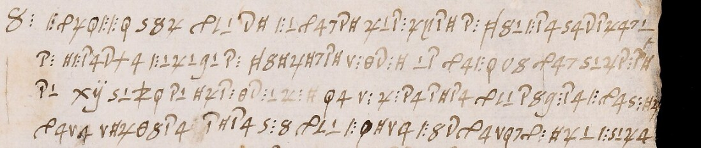
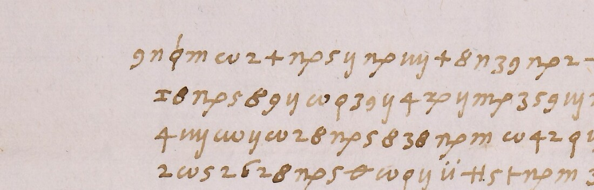
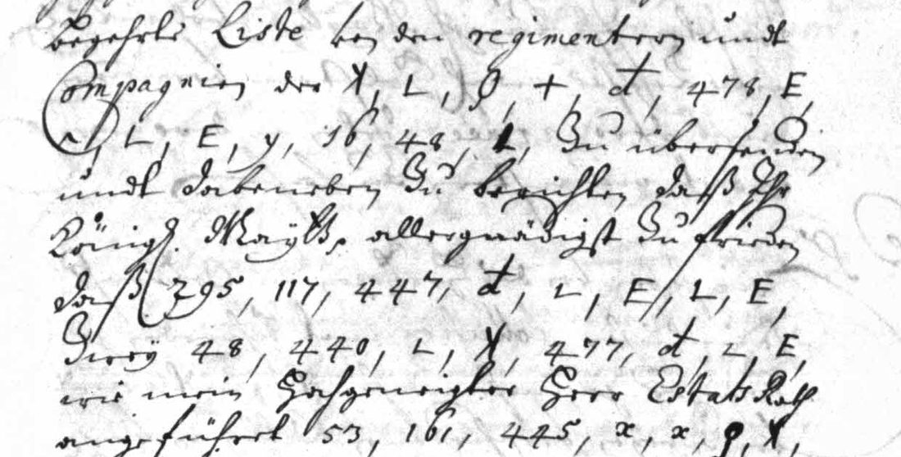
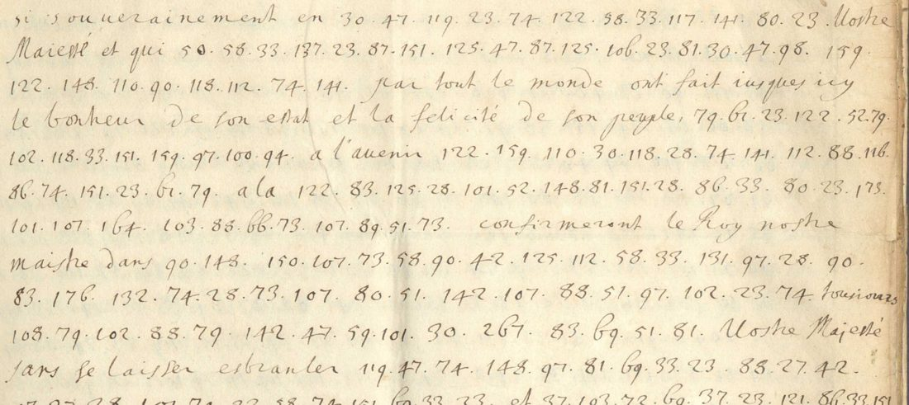
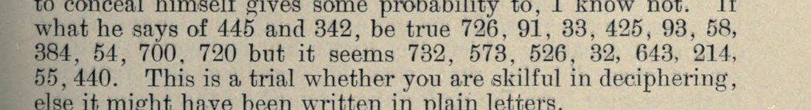
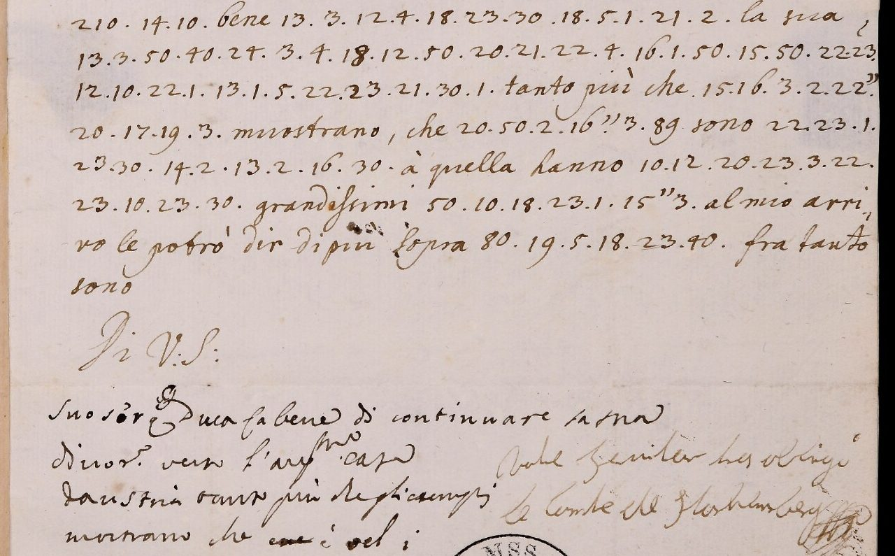
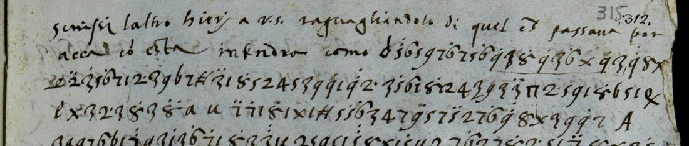

Cipher Letters
Early modern letters written in cipher, read in October and November 2026, all but one by Malcolm McBratney (Brisbane) working with Claude, an AI model; the Ridolfi letter of 1646 is Brice Dudout's reading. Each was checked and merged in Cyphersolver.
Letters read in part

1537 · San Secondo to Sicily"I laugh so much I fear I shall burst": Pier Maria Rossi to Ferrante Gonzaga
A count mocks an Imperial commander's retreat in Piedmont, in two letters written after supper and muscatel.
Read in part: 0.934 of words
1550 · Rome to Milan"The thing will not succeed": Girolamo Muzio to Ferrante Gonzaga, 11 January 1550
From the conclave of 1549-50: a courier said to bring the Emperor's consent to Monte as Pope, and Muzio's doubts.
Read in part: 180 of 198 words of c. 3r (0.909) 1572 · Germany
1572 · GermanyFlowers of sulphur and the corruption of Sol: Johann Gerlach's cipher recipe book, 1572-76
A German alchemist's notebook of sulphur, antimony and gold recipes, read in part with Julius Kohn's key of 1889.
Read in part: 1,260 of 1,394 words (0.904) 1612 · perhaps Carpi ("Di Carp.", doubtful)
1612 · perhaps Carpi ("Di Carp.", doubtful)"Do not show your hand without need": Girolamo Augustoni (as catalogued) to an unnamed correspondent, 9 October 1612
A report on a negotiation over fiefs, with a letter of the Provost got by cunning and advice to stay on guard.
Read in part: 82 of 113 cipher words (0.726) 1627 · Not named (Venice likely, not proved) to Copenhagen
1627 · Not named (Venice likely, not proved) to CopenhagenInto a third week waiting for a galley: "Quem novit" to Christian IV, 20 July [1627 or 1628]
An unnamed traveller, signing "whom you know", tells the king he has waited into a third week for a galley and borrowed 3,000 thalers.
Read in part: 70 of 103 cipher units (67.96%) 1629 · Paris to Copenhagen
1629 · Paris to CopenhagenWallenstein's Mecklenburg cannot please the king: Johan Zobel to Christian IV, 20 September 1629
The Danish resident in Paris hides Stralsund, Wallenstein's Mecklenburg and Duke Frederick's bishoprics in 19 number-cipher words.
Read in part: 15 of 19 cipher words (78.9%) 1646 · Rome to NaplesFive hundred horse and a refused passage: Ludovico Ridolfi to the duque de Arcos, 8 May 1646
Brice Dudout's reading of Ridolfi's cipher from Rome: the Pope refuses passage to five hundred horse sent to help Tuscany.
Read in part: 396 of 431 words (0.919)
1675 · Copenhagen to The HagueNo war on Sweden without a fleet: Conrad Biermann to Paul von Klingenberg, February to July 1675
Spring 1675: Copenhagen tells its envoy at The Hague about the fleet, the regiments and boatmen, and the Elector of Brandenburg.
Read in part: 3,648 of 4,709 tokens (77.5%), eleven letters
1676-1677 · ParisTurn your arms on Denmark: Carl Bonde and Nils Lillieroot to Louis XIV, 6/16 October 1676
Sweden's envoys press Louis XIV to turn on Denmark and pay a subsidy; read with a key rebuilt from a chancery decipherment.
Read in part: 570 of 794 words (0.718)
1678 · Dublin to London"Not credible": the Duke of Ormond to the Earl of Arran, 24 January 1677/8
Ormond tests his son with twenty code figures on a preacher's tale, read in part with Tomokiyo's 1680 key shifted by seven.
Read in part: 10 of 20 figures (50%)
1720-1721 · Vienna to LondonA tenor for London: Count Starhemberg to Giuseppe Riva, December 1720 to June 1721
Keep writing in cipher, a return as Ambassador and the tenor Borosini: the parts the contemporary decipherment left unglossed, read in part.
Read in part: 372 of 426 cipher units (0.873) 1721-1727 · Modena, Vienna and Milan to London
1721-1727 · Modena, Vienna and Milan to London"So as not to wake sleeping dogs": Selvatico Estense, Olivazzi and Starhemberg to Giuseppe Riva, 1721-1727
Nine letters to Modena's agent in London on the war-damage claim, Mirandola and Palm, read with a table from a decipherment of the time.
Read in part: 2,175 of 2,540 cipher units (0.856) 1737 · St Petersburg to Persia
1737 · St Petersburg to PersiaWatch the Shah and the Turks: Ostermann to Kalushkin, resident in Persia, 17 April 1737
A Russian rescript in a cipher of borrowed letters and figures: the Shah, the Turks and an ambassador back from Constantinople.
Read in part: 140 of 152 words (0.921)
undated · probably Rome, to Florence"Our side will be deceived": an unnamed writer to Cristiano Pagni, undated
A report to Cosimo I's secretary on a league, Cervia and Ravenna to be pledged, and French dealings with a person hidden as A.
Read in part: 1,369 of 1,514 cipher units (90.4%)Other work, below our own bar
Filed and checked in Cyphersolver, but decoded rather than read, or in progress. No write-up yet.
- Corsi letters, 1513-14: Three letters decoded, not read; the key came from a decipherment in the same file (doc. 627).
- Magdeburg 1647 documents: Document No. 29 and three slips decoded, not read.
- Paulmyer passages and key v7, Paris 1664-65: Passages decoded, not read; key v7 from contemporary glosses; Brice Dudout's held-out test of it on fresh glossed leaves gave 0.881 against 0.324 for the best control (his PR #776).
- Renard to Charles V, Paris 1549 (Vienna original): The Vienna original with its contemporary decipherment, compared with Ivan Sourvillo's reading of the Modena copy.
- Niccolini, Pavia 1492-93: Four short passages tried with the 1494 Milan embassy key: attempted, not read (PR #797).
- Heespen and Baudissin, Bremen 1675-76: Key rebuilt from contemporary glosses; the one bare passage decoded, not read.
- Christian Pentz to Christian IV, 1636: Key family recovered; read in part, below our own 65% line.